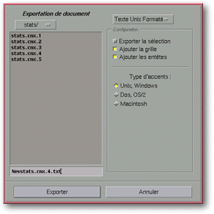

<!-- Documentation XQuad (c)1995-2000 AXENE contact axene@axene.org>
<html>

<head>
<title>Exportation du texte</title>
</head>

<body BGCOLOR="#FFFFFF" BACKGROUND="Images/back.gif" TEXT="#000000">

<p ALIGN="right">  </p>

<p><br>
<br>
Le sélecteur de fichier &quot;Exportation de texte&quot; permet de choisir le nom du
fichier dans lequel une partie de la feuille de calcul active sera exportée. Ce
sélecteur de fichier peut prendre trois formes, selon l'élément du sous-menu &quot;
Fichier / Exporter&quot; utilisé. </p>

<p><br>
</p>

<hr>

<h2 align="center"><a NAME="fs_export_vector">Exporter sous forme de dessin vectoriel</a></h2>

<p>Pour accéder à ce sélecteur de fichiers, il faut passer par le menu &quot;Fichier /
Exporter / Dessin Vectoriel...&quot;. L'exportation sous forme de dessin vectoriel peut
s'effectuer sur une simple sélection de cellules de la feuille de calcul ou sur la
sélection d'un cadre contenant un graphique. Dans le premier cas, les paramètres <a HREF="Box_PrintSetup.html#button_print_grid">&quot;Imprimer grille&quot;</a> et <a HREF="Box_PrintSetup.html#button_print_headers">&quot;Imprimer entêtes de lignes et
colonnes&quot;</a> de la boîte de dialogue <a HREF="Box_PrintSetup.html">'Configuration
de l'impression'</a> sont pris en compte. L'exportation en dessin vectoriel s'effectue au
format Adobe Illustrator ®. Ce format de fichier peut être importé dans Xclamation®,
logiciel de Publication Assistée par Ordinateur d'Axene. L'extension &quot;.ai&quot; sera
ajoutée automatiquement au nom du fichier. Ce sélecteur est identique et d'emploi
similaire à un <a HREF="Box_File_Selectors.html#file_selector">sélecteur de fichier
standard</a>. </p>

<p><br>
</p>

<hr>

<h2 align="center"><a NAME="fs_export_text">Exporter en Texte.</a></h2>

<p><a NAME="format_list">Pour accéder à ce sélecteur de fichier, il faut passer par le
menu &quot;Fichier / Exporter / Texte..&quot;. Dans ce sélecteur particulier, une liste
déroulante en haut de la partie droite de la boîte permet de choisir le format texte
utilisé pour l'exportation. En fonction du format de texte choisi, la section <i>&quot;Configuration&quot;</i>
de la partie droite de la boîte peut prendre deux formes&nbsp;: </a><br>
&nbsp; 

<ol>
  <li>Pour les formats <i>&quot;Texte Unix Tab&quot;</i>, <i>&quot;Texte Unix CSV&quot;</i>, <i>&quot;Texte
    Dos Tab&quot;</i>, <i>&quot;Texte Dos CSV&quot;</i>, <i>&quot;Texte Mac Tab&quot;</i> et <i>&quot;Texte
    Mac CSV&quot;</i>, le sélecteur prend la forme suivante&nbsp;: <p align="center"> <br>
    <i><small>Photo d'écran: Sélecteur de fichier Exportation de document.</small></i> </p>
    <p><br>
    <a NAME="configuration_section">La section <i>&quot;Configuration&quot;</i> est composée
    de haut en bas par&nbsp;: </a><br>
    &nbsp; <ul>
      <li><a NAME="selection_button">le bouton <i>&quot;Exporter la sélection&quot;</i> qui
        permet de <b>choisir si l'on veut exporter uniquement la sélection de cellules</b> ou
        toute la partie utilisée de la feuille de calcul. Si ce bouton est enfoncé, seul la
        région rectangulaire de cellules sélectionnées sera exportée. </a><br>
        &nbsp;</li>
      <li><a NAME="formula_button">le bouton &quot;Exporter les formules&quot; qui permet de <b>choisir
        si l'on veut exporter les formules ou le résultat des formules</b>. Si ce bouton est
        enfoncé et qu'une cellule à exporter contient une formule ( &quot;<tt> =pi*carré(12)</tt>
        &quot; par exemple), c'est la formule sous forme de chaîne de caractères qui sera
        écrite dans le fichier. Si ce bouton n'est pas enfoncé, alors c'est le résultat de la
        formule ( &quot;<tt> 452.38934211693022633</tt>&quot; dans l'exemple),.qui sera écrit. </a><br>
        &nbsp;</li>
      <li><a NAME="separator_textfield">le champ texte <i>&quot;Séparateur&quot;</i> qui permet
        de <b>choisir la chaîne de caractère pour marquer la séparation des cellules</b>. Cette
        chaîne de caractères sera utilisée pour séparer les cellules horizontalement (par
        colonnes). </a><br>
        &nbsp;</li>
      <li><a NAME="accents_buttons">les trois boutons <i>&quot;Types d'accents&quot;</i> (<i>&quot;Unix,
        Windows&quot;</i>, <i>&quot;Dos, OS/2&quot;</i> et <i>&quot;Macintosh&quot;</i> ) qui
        permettent de <b>spécifier la table d'accents à utiliser</b> pour obtenir une bonne
        conversion vers les systèmes et environnements cités. </a><br>
        &nbsp; </li>
    </ul>
  </li>
  <li>Pour les formats <i>'Texte Unix Formaté&quot;</i>, <i>&quot;Texte Dos Formaté&quot;</i>
    et <i>&quot;Texte Mac Formaté&quot;</i>, le sélecteur prend la forme suivante&nbsp;: <p align="center"> <br>
    <i><small>Photo d'écran: Sélecteur de fichier Exportation de document.</small></i> </p>
    <p><br>
    La section <i>&quot;Configuration&quot;</i> est composée de haut en bas par&nbsp;: <br>
    &nbsp; <ul>
      <li><a NAME="selection_button2">le bouton <i>&quot;Exporter la sélection&quot;</i> qui
        permet de <b>choisir si l'on veut exporter uniquement la sélection de cellules</b> ou
        toute la partie utilisée de la feuille de calcul. Si ce bouton est enfoncé, seul la
        région rectangulaire de cellules sélectionnées sera exportée. </a><br>
        &nbsp;</li>
      <li><a NAME="grid_button">le bouton <i>&quot;Ajouter la grille&quot;</i> qui permet d'<b>ajouter
        des caractères pour souligner le contour des cellules</b>. Lorsque ce bouton est
        enfoncé, chaque cellule sera entourée par les caractères les plus adéquats disponibles
        dans le jeu caractères spécifié. </a><br>
        &nbsp;</li>
      <li><a NAME="header_button">le bouton <i>&quot;Ajouter les entêtes&quot;</i> qui permet d'<b>ajouter
        les entêtes de lignes et de colonnes à l'exportation</b>. Quand ce bouton est enfoncé,
        les systèmes de coordonnées de la feuille de calcul transparaîtront dans le fichier
        d'export. </a><br>
        &nbsp;</li>
      <li><a NAME="encoding_buttons">les trois boutons <i>&quot;Types d'accents&quot;</i> (<i>&quot;Unix,
        Windows&quot;</i>, <i>&quot;Dos, OS/2&quot;</i> et <i>&quot;Macintosh&quot;</i> ) qui
        permettent de <b>spécifier la table d'accents à utiliser</b> pour obtenir une bonne
        conversion vers les systèmes et environnements cités. </a></li>
    </ul>
    <p>Dans l'exportation sous forme de texte formaté, les cellules d'une même colonne
    seront exportées avec le même nombre de caractères. Dans ce cas, le fichier visualisé
    avec des polices de caractères non proportionnelles permet de voir les cellules
    parfaitement alignées. </p>
  </li>
</ol>

<p>Les parties de gauche et inférieures s'utilisent de façon similaire à un <a HREF="Box_File_Selectors.html#file_selector">sélecteur de fichier standard</a>. </p>

<p><br>
</p>

<hr>

<h2 align="center"><a NAME="fs_export_html">Exporter en HTML</a></h2>

<p>Pour accéder à ce sélecteur de fichiers, il faut passer par le menu &quot;Fichier /
Exporter / HTML...&quot;. L'exportation s'effectue sur l'ensemble des cellules de la zone
utilisée de la feuille de calcul. Le rendu HTML est fait grâce à une table (marqueur <tt>&lt;TABLE&gt;
.... &lt;/TABLE&gt;</tt>) de la norme HTML 3.0. L'extension &quot;.html&quot; sera
ajoutée automatiquement au nom du fichier. Ce sélecteur est identique et d'emploi
similaire à un <a HREF="Box_File_Selectors.html#file_selector">sélecteur de fichier
standard. </a></p>

<p><br>
</p>

<hr>

<p ALIGN="right"></p>
</body>
</html>
